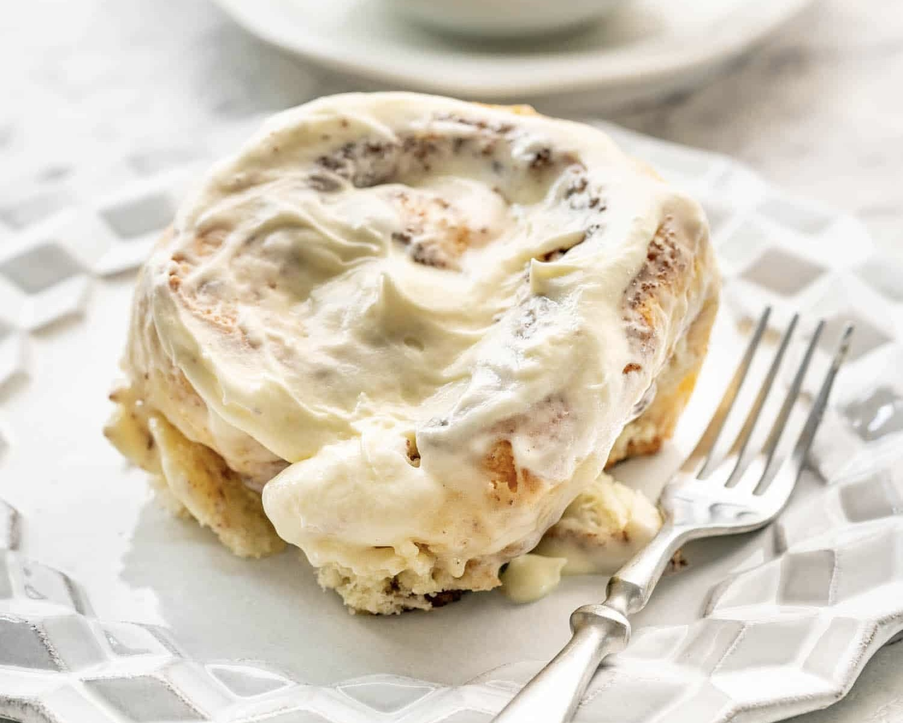

Cinnamon Rolls

Description
Get ready to elevate your baking game with these mouthwatering Copycat Cinnabon Cinnamon Rolls. Picture this: soft, pillowy dough swirled with a heavenly blend of brown sugar and cinnamon, topped with a luxurious cream cheese icing. Sounds like a dream, right? Well, get ready to make it a reality!
Perfect for treating your loved ones or impressing your friends at your next gathering, these cinnamon rolls are guaranteed to steal the show. From the moment you start mixing the dough to the final drizzle of creamy icing, every step is a labor of love that's well worth the effort.
Begin by activating the yeast in warm, frothy milk, then watch as it works its magic to transform a simple mixture of sugar, butter, eggs, and flour into a soft, elastic dough. After a blissful rise, roll out the dough and generously coat it with a decadent layer of butter, brown sugar, and cinnamon, before tightly rolling it into tantalizing swirls of goodness.
Once baked to golden perfection, these rolls emerge from the oven with a tantalizing aroma that's sure to set mouths watering. But the magic doesn't stop there - oh no! Finish off these irresistible treats with a generous slathering of cream cheese icing, its rich and creamy sweetness perfectly complementing the warm, spiced flavors beneath.
So go ahead, treat yourself and your loved ones to a taste of pure indulgence with these Copycat Cinnabon Cinnamon Rolls. With every bite, you'll be transported to cinnamon roll heaven, leaving you and your guests craving more!
Ingredients
Dough
- 2 1/4 tsp active dry yeast
- 1 cup milk (lukewarm)
- 1/2 cup granulated sugar
- 1/3 cup butter (unsalted, softened)
- 1 tsp salt
- 2 eggs
- 4 cups all purpose flour
Filling
- 1 cup brown sugar (packed)
- 3 Tbsp ground cinnamon
- 1/3 cup butter (unsalted, softened)
Cream Cheese Icing
- 6 Tbsp butter (unsalted, softened)
- 1 1/2 cups powdered sugar
- 1/4 cup cream cheese (at room temperature)
- 1/2 tsp vanilla extract
- 1/8 tsp salt
Steps
- For the rolls, dissolve the yeast in the warm milk with a teaspoon of sugar in a large bowl. Let sit for about 5 minutes. If the yeast is good, it will start to froth up.
- To the bowl of your mixer add the sugar, butter, salt, eggs, and flour. Next, pour in the yeast mixture and mix until well incorporated and the dough comes clean from the side of the bowl.
- Place the dough into an oiled bowl, cover and let rise in a warm place about 1 hour or until the dough has doubled in size.
- Grease a 9x13 inch baking dish with cooking spray or butter. Combine the brown sugar and cinnamon in a bowl.
- Roll the dough out on a lightly floured surface, until it is approximatedly 16 inches long by 12 inches wide. It should be approximately 1/4 inch in thickness. Spread the 1/3 cup of butter evenly over the dough, then sprinkle with the sugar evently over the surface of the dough. Working carefully, from the long edge, roll the dough down to the bottom of the other edge tightly. It should look like a long log when you are done rolling.
- Cut the roll into 1 1/2 inch slices and place in the prepared baking pan. You can use floss to cut the slices.
- Cover with a clean kitchen towel or plastic wrap and let rise for 30 minutes, or until doubled in size. Altertatively, you can cover and place in the refrigerator overnight.
- Preheat oven to 350˚F.
- Place the baking pan in the oven and bake for 20-25 minutes or until golden brown. Cooking time can vary greatly!
- While the rolls are baking make the icing by mixing all the icing ingredients and beat well with an electric mixer until fluffy and smooth.
- When the rolls are done, spread generously with icing.